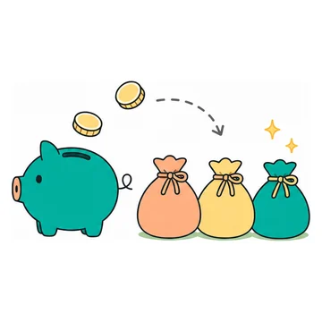
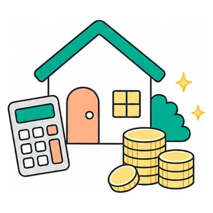
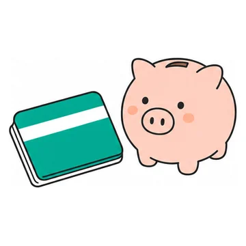
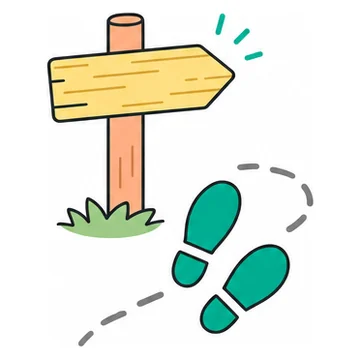
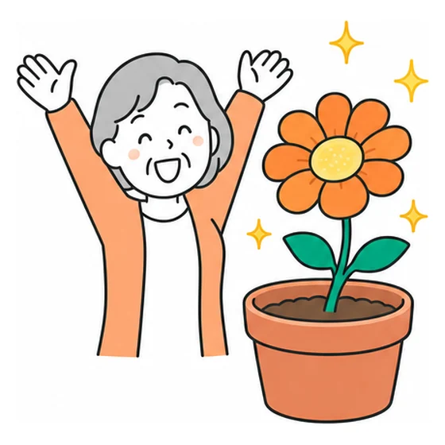

4つのマスに書くだけで、
「わが家は毎月◯円」ができあがり


入るお金
いま
毎月の額を分からないマスは、空欄のままで大丈夫です。
個別のご相談で、いっしょに埋めます。
通帳やアプリを見ながら、ざっくりで。
「万円」で書くだけです。
ここが、毎月まわせる上限です。
分かるところだけで大丈夫。
合計は、自動で出ます。
いつ使うお金か、で分けます。
新NISAを考えるのは、「増やす」の袋だけです。
投資は、元本（最初に入れたお金）が減ることもあります。「使う」「守る」のお金は、増やすほうには入れません。
目安は「なくても、今月の生活が変わらない額」。
迷ったら、ひとつ小さいほうを。
4つのマスが、
1枚のカードになりました

わが家は、毎月
このカードは、スクリーンショットで残せます。
ご家族に見せるのも、おすすめです。
参加された方のご相談は、無料です（Zoom・60分）。
持ち物は、このノートと通帳やアプリの画面だけ。
ここから下は、読みたいところだけ。押すと開きます。
ここまでで「いつ使うお金か」と「毎月いくらか」が決まりました。
次に決めるのは、「何を買うか」ではなく、自分の決め方です。
書き出すのは3つ。
このノートでは、具体的な商品の名前はおすすめしません。
自分の決め方が言葉になっていれば、どこで説明を受けても、自分で考えて決められます。
銀行や証券会社、サイトで説明を受けるとき、毎回そろえて確認することを決めておきます。
扱うものも費用も、会社によって違います。
どれが当たりかを当てにいくのではなく、同じ質問リストで比べられる状態を作るのが目的です。
口座を開き、「毎月◯日に◯円」の自動の積立（手続きしなくても、毎月決めた額を買い足してくれる設定）をします。
会社はご自身で選んでください。
このノートでは特定の会社をおすすめしません。
ステップ6の質問リストで比べれば、自分で選べます。
設定する日は、給料日の直後にしておくと続きます。
残ったら回す、ではなく、先に取り分ける形にするためです。
始める前に、やめ方と見直し方を決めておきます。
これを自分の字で書いておくと、大きく下がった日に効きます。
どれも一般的な考え方です。個別の事情で答えは変わります。
教育費は「守る」お金です。
大学入学までが10年を切っているなら、その分は新NISAに入れず、預金や定期で確保します。
増やすほうに回すのは、教育費を除いた「増やす」の部分だけ。
夫婦それぞれに口座を作れるので、金額は家族の合計で考えて、口座は分けるのが基本です。
まずワークシートCで「使う」に入れる分を確認します。
生活費が月20万円なら、3〜6か月分で60〜120万円。
つまりこのケースは、増やすより、まず「使う」をためるのが先です。
ただしゼロにする必要はありません。
月5,000円〜1万円で「仕組みに慣れる」のも、ひとつのやり方です。
金額より、始まっていることに価値があります。
「もう遅いですか？
」とよく聞かれますが、65歳から使うとしても10年以上あります。
始める余地はあります。
ただし50代は、時間が限られるのも事実です。
毎月の額を無理に大きくするより、退職金や守るお金と分けて、淡々と積む形にします。
一発逆転をねらう年代ではなく、分け方のていねいさで守る年代です。
値下がりは、続けていれば何度か起きます。
10年以上使わないお金だけで始めていれば、あわてなくて大丈夫です。
毎月同じ額で買う積立は、下がっているあいだは同じお金で多く買えています。
ワークシートFに書いた自分の言葉を読み返してください。
正解の額はありません。
続けられる額が、あなたの正解です。
迷ったら、決めた額より1段階小さくしてください。
その場で決めず、いったん持ち帰ってください。
そしてワークシートEの項目を、ひとつずつ確認してみてください。
決められないのは、迷っているからではなく、比べる質問リストをまだ持っていないからです。
質問リストさえあれば、判断は自分でできます。
数を増やすほど安全になる、とは限りません。
中身が重なっていると、分けた気分ほどには分かれていないこともあります。
大事なのは数ではなく、それぞれを持っている理由を自分で言えるかどうかです。
年1回の見直しのときに考えれば間に合います。
思いついたその日に動かすと、たいてい余計なことをします。
変えるかどうかは、ステップ3で決めた「いつ使うお金か」が変わったときだけ、で十分です。
金額は家族で決めて、口座はそれぞれで。
どちらかに寄せるより、2人とも仕組みを持っているほうが、家のお金の会話が続きます。
基本は「使うとき」と決めておくと、迷いにくくなります。
値上がりしたから売る、下がったから売る、ではなく、ステップ3で決めた「何年後に使うか」が売るときです。
年1回の見直しだけは、ほったらかさないでください。
確認するのは3つ。
積立が続いているか、生活の変化で色分けが変わっていないか、毎月の額が今の生活に合っているか。
それ以外の日は、忘れていて大丈夫です。
おばあちゃんでもできる お金の増やし方 オンライン勉強会
fulfull株式会社｜投資には元本割れのおそれがあります。